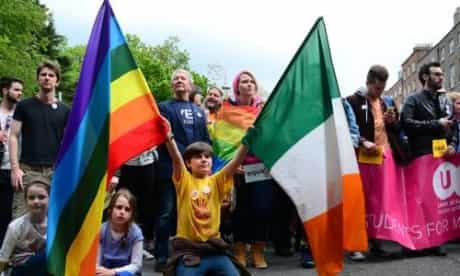
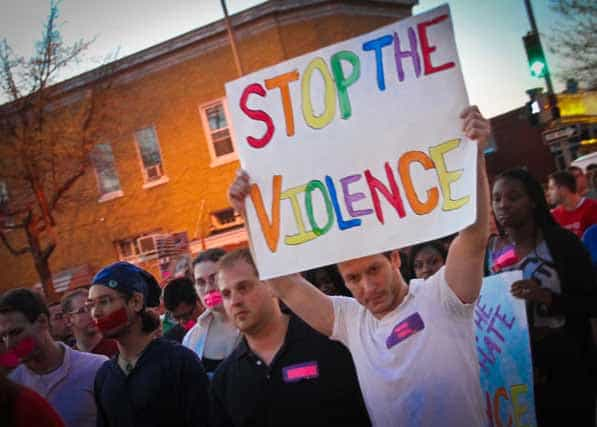

< < < Back
Yet Another Survey Shows That LGBT Domestic Violence Rates Are The Same As Heterosexual Couples – Return Of Kings
The AIDS Council of New South Wales has declared that LGBT domestic violence is just as prevalent as in heterosexual relationships. As Australian of the Year Rosie Batty and others continue to be lauded for their one-sided and one-dimensional work (Batty’s ex-husband was spectacularly mentally ill when he killed their son), this news about the usually suppressed or ignored LGBT statistics received little political and other coverage.
For time immemorial, the focus has been on vilifying straight men. The use of this very narrow, politically-wielded prism, which bundles together all heterosexual men as potential abusers somehow responsible for what any other members of their gender and sexual orientation do a thousand miles away, shows no sign of sputtering.
Gay marriage may have been recently legalized in the United States and Ireland, but don’t expect anything like equal responsibility when it comes to dealing with allegations of domestic violence within LGBT relationships. LGBT couples can and will be presented with special social and legal privileges. By virtue of LGBT partners being part of a sexual minority, SJWs and others will argue that there are more allegations (for them this means automatic convictions) against straight men than against LGBT individuals. This utterly sweeps under the carpet that inconvenient concept called per capita rates.
Are LGBT domestic violence rates actually higher?

On paper, according to the studies, this woman is just as likely to get such a bruise from a female partner as a male one.
As the article makes clear, LGBT domestic violence is underreported. Additionally, straight men have been subjected to unrelenting, beyond vitriolic attacks by feminists about their supposedly inherently and continually violent behavior towards their partners. So if these LGBT domestic violence statistics are being unearthed with nothing like the antagonistic political agenda used by SJWs against heterosexual males, isn’t it more than likely that LGBT partner abuse is actually much, much higher?
In comparing the purported rates of heterosexual domestic violence with the figures from LGBT advocacy groups, I am by no means affirming the legitimacy of the “studies” feminists have linguistically gerrymandered to paint men as inveterate abusers requiring draconian “violence against women” legislative provisions. Also, these anti-male studies invariably treat a survey response as if it were an indisputable conviction of a man.
What I am doing, by contrast, is pointing out that the very foundation on which feminists and SJWs have castigated men is thoroughly disproven by these LGBT statistics. Male violence against women is portrayed as the inevitable result of male privilege and patriarchy. Yet even those women who “escape” this “patriarchy,” at least in a lesbian sense, are seemingly just as likely to beat their female partners as a man is to beat his girlfriend or wife. Without a female partner to beat, gay men will also just as readily beat their Tom, Dick or Harry, too.
What happened to marriage equality?

Are we going to see the same domestic violence witch hunt against LGBT individuals as we have against heterosexual men over the last two decades? Unlikely. “Marriage equality” is a selective process, after all.
Those not living in nuclear fallout shelters will know that both Ireland and the United States have legalized gay marriage this year. They join a number of other, usually Western nations. Although in the United States the blanket legalization included judicial invalidation of many democratically-erected state constitutions and other marriage laws, it looks like gay marriage is here to stay for the foreseeable future.
Sadly, during the euphoria following the gay lobby’s Supreme Court victory, few, if any LGBT advocates have considered how gay couples are continually given a free pass vis-á-vis being held to the same standards as men in heterosexual relationships, let alone marriages. There seems to be no intention, commensurate with the legalization of gay marriage, to treat LGBT domestic violence as seriously.
The focus on straight men and domestic violence is illogical, to say the least. If the same sorts of studies alleging heterosexual women are regular victims of domestic show that LGBT individuals are equally prone to committing such offences, why the silence? Does this mean that America should only focus on Caucasian-American domestic violence because they constitute 70% of the population and, say, the Native American and Chinese-American communities each only comprise 1-3%?
The vast outnumbering of gay, lesbian, bisexual and transgender couples by those in heterosexual relationships is not a proper reason for unleashing 99.5% of the focus on straight men, not to mention straight women as well (which happens once a millennium anyway).
Equality means equal responsibility

Based on statistics such as the NSW AIDS Council’s, LGBT individuals are far more likely to be attacked by an intimate partner than through gay hate crimes.
Critics of ROK, the manosphere, and the rapidly growing philosophy of Neomasculinity attack our complaints as if they weren’t legitimate. Their arguments might be worth a dime if they fully addressed the reality of announcements such as the New South Wales AIDS Council’s. The political climate has never been geared towards admonishing LGBT individuals for violence. Nevertheless, the warning bells of equal victimization are ringing ever more loudly. But trust our SJW friends to keep their fury solely leveled at the straight men of the world.
Several times now I have explicitly or implicitly stated that sites like ROK, and those who write for them, would become largely redundant if double standards like not addressing LGBT domestic violence were suddenly extinguished. We invite our detractors to grapple with the statistics we are raising. They go well beyond the extreme selectivity of (anti-male) anti-domestic violence campaigns.
From suicide to rape-conviction-by-testimony (try getting a tax evasion sentence with that sort of “evidence”), female only engineering programs to corporate gender quotas, they are there for everyone to see (and for SJWs to ignore).
Every time you hear the phrase “marriage equality,” ask yourself if the equality brings the rights but abandons all the responsibilities.
Read More: The Major Flaw In Today’s Perception Of Domestic Violence